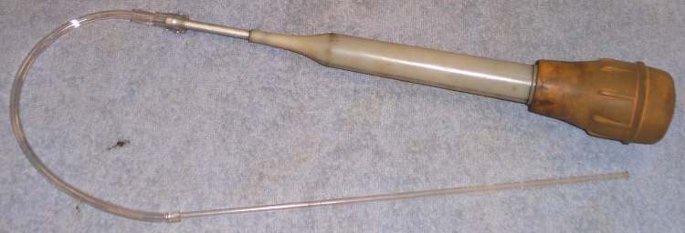

Fork oil is the special oil inside each front fork leg. It works with the fork spring and damper rod to control how fast the fork moves.
What it does
When the fork moves, oil is pushed through small holes. The oil's thickness (viscosity) sets how much it resists: thicker oil gives slower, firmer damping. Over time the oil wears out, picks up metal from the bushes and water past the seals, and gets thinner. The fork then bounces and dives more. The amount of oil also matters: too little and the fork bottoms; too much and it feels hard and can blow the seals.
Signs it is worn or failing
- Bouncy front, dives hard under braking, bottoms out: Forks bottom out.
- Harsh or unequal legs: Forks feel harsh.
- Oil leaks lower the level: Fork leak.
- Drained oil milky white (water) or grey and full of metal.
When to replace it
Change at the interval in your bike's manual, whenever the seals are replaced, and if the drained oil is milky or dirty.
What to match when buying
- Use the grade and amount in your manual for that exact fork. Fork oils are sold by weight number (for example 10W), but makers do not grade them the same way, so one brand's 10W can differ from another's.
- Some manuals give a grade code that is not a W number (K-Light 125: "46#"). Do not assume it equals a W grade; ask the dealer or oil maker for a matching product.
- Do not use engine oil or gear oil instead of fork oil.
- Measure the exact quantity per leg with a measuring cylinder, or set the oil level if your manual uses level instead of volume.
Fitting notes
- Fill both legs the same.
- Pump the fork slowly several times to remove air before fitting the spring and cap.
- Workshop job on most bikes: Replace fork oil and seals.
- Some forks need the oil level set instead of a measured volume. An oil level tool with its gauge set to the manual's level draws off the excess. The manual says whether the tube is fully compressed or fully extended for the check.
- A level tool can be made from a length of pipe, some tubing and a syringe or baster.
Reference (K-Light 125)
| Item | Value | PDF page |
|---|---|---|
| Fork oil per leg | 285 ± 2 ml | 156 |
| Grade in manual | 46# (no confirmed equivalent) | 156 |